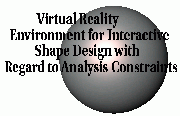

 |
OverviewDesign is an iterative process that often involves trade-offs between competing performance criteria. For example, designers strive to design vehicles that are both lightweight and strong. Design of large structural systems is accomplished through the aid of sophisticated optimization software. Currently, the interaction a designer has with the optimization process is limited to the initial stages of problem definition, where the designer specifies an objective function, design parameters, and constraints. As the design process progresses, design objectives and constraints are often modified based on the designer's experience, in order to achieve a viable solution.The objective of this research is to develop a technique that allows a designer to play an active role in the design optimization process. This is accomplished by combining fast optimization methods, based on sensitivity analysis, with virtual reality techniques to provide an interactive method for design optimization. Fast optimization methods are needed to allow large design problems to be investigated in an interactive time frame. Virtual reality techniques provide an interactive environment for the designer to investigate multiple design changes. Keeping the designer active in the design process allows the designer to use all of his/her prior knowledge about the problem to be brought to bear to achieve a viable, optimal solution to the problem in a timely manner.
ApproachDesign sensitivity analysis is present in many commercial finite element software packages. In this research, stress sensitivities are used. These sensitivities represent the derivative of the stress with respective to the finite element mesh changes. They can be used to approximate stress changes as a result of shape changes to the finite element model when used in a Taylor series approximation.In the area of geometric modeling, interactive shape manipulation can be performed on the surfaces of a geometric model using direct manipulation techniques. These techniques allow the user to push and pull on a 3D model to create a deformed shape. One technique embeds the geometric model in a NURBS volume. Then as the NURBS volume is deformed, the embedded model will be deformed correspondingly. The embedding technique does not restrict the definition of the embedded geometry, thus we are using this method to deform the finite element model in order to obtain the relationship of the finite element mesh changes and the control point changes. This project combines the finite element model, stress sensitivity calculations, and free form deformation to allow the user to perform interactive shape changes and view the resultant stress changes in a virtual environment. The finite element model is embedded in a NURBS volume of control points. The user identifies the control points representing the areas that can be changed. The sensitivities with respect to those design variables (control points) are calculated. Then the user can grab the surface and change the shape. The sensitivities are used in a Taylor series to approximate the new stresses and these stresses are shown on the geometry in the virtual environment.
Virtual Reality Software and PeripheralsSoftware
PeripheralsBOOM3C from Fakespace CrystalEyes Glasses from StereoGraphics
Additional Media
PersonnelProfessors
Graduate Students
Undergraduate Students
PublicationsT. P. Yeh & J. M. Vance, "Improved Algorithms to Facilitate Real-Time NURBS-Based Free Form Deformation," submitted to Computer Aided Design.T. P. Yeh & J. M. Vance, "Applying Virtual Reality Techniques to Sensitivity-based Structural Shape Design," 1997 ASME Design Automation Conference Proceedings, September 14-17, 1997, Sacramento, CA. T. P. Yeh & J. M. Vance, "Combining MSC/NASTRAN, Sensitivity Methods, and Virtual Reality to Facilitate Interactive Design," accepted for publication in Finite Elements in Analysis and Design, also in 1995 MSC World Users' Conference Proceedings, Universal City, CA, May. 8-12, 1995. (This paper was selected as most representative of the conference theme, and as Model of the Month for MSC/WORLD, August 1995) (Also published in Finite Elements in Analysis and Design, 1997. T. P. Yeh & J. M. Vance, "Interactive Design of Structural Systems in a Virtual Environment," Proceedings of the 24th Mid-Western Mechanics Conference, ISU, October 1-4, vol. 8, pp. 185 - 187, 1995. Yeh, T. P., Applying virtual reality techniques to engineering design optimization, Ph.D. Thesis, Iowa State University, 1997
FundingFunding for Virtual Environment for Engineering Design Optimization is provided by the National Science Foundation grant # DDM 930 9663: A Virtual Environment for Engineering Design Optimization
Mechanical Engineering | VRAC | ISU | Home | E-mail | Previous
|
{kind=link}
{kind=link}